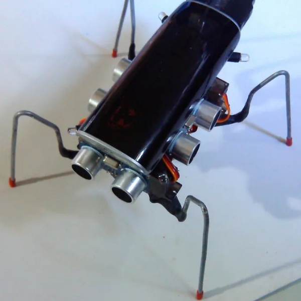
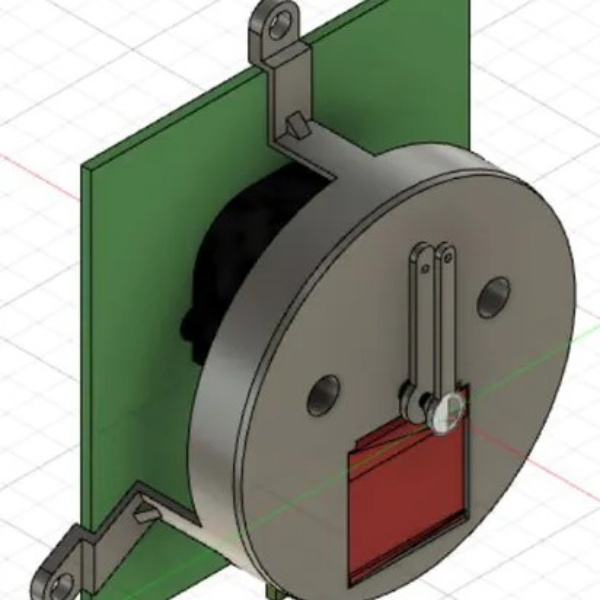

Theses List

Arduino Based Insect Tracker
The main killing
mechanism is a repurposed Glade fragrance sprayer that
cost 5 dollars, so the only not so accessible part is the helium
equipment. It takes temperature and humidity data as well
and sends it to the cloud for you to pick the best place to put
this trap...
Read more →

Arduino Self Timer for the Cloud
This radio alarm clock has amazing sound given its size and
works as a Bluetooth speaker as well. The illumination of the clock is too bright to have it
close to where you sleep, there is no switch nor a possibility to dim it.
The clock is not radio controlled, you have to set it
manually...
Read more →
Cloud Based Monitoring System for Events and Marketing
Event Monitoring Software is a subset of network monitoring
software. Event monitoring consists of analyzing and notifying
network administrators of relevant events so they can remediate
errors, or enforce security policy. An event monitoring
ecosystem consists of software and hardware components
such as operating systems, database management systems,
applications, firewalls, processors...
Read more →